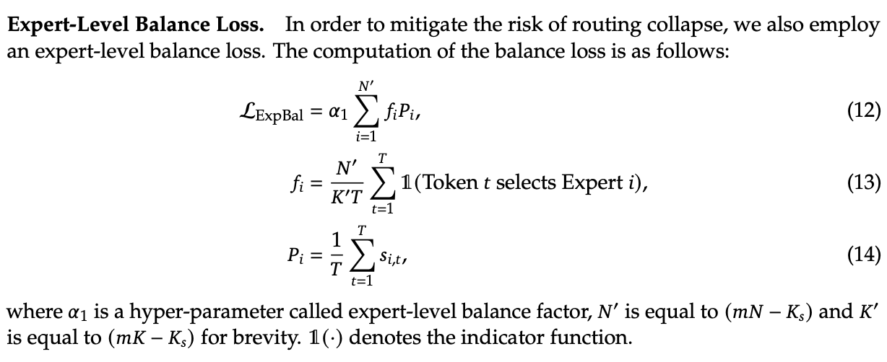
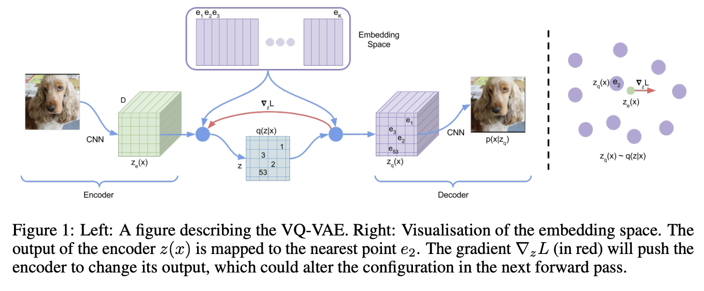
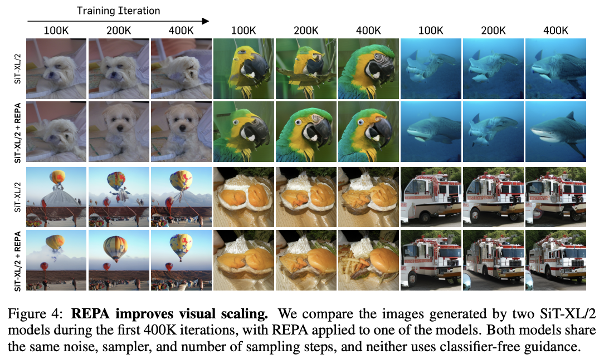

Deepseek Continued
Table of Contents
- DeepSeek Overview Part 2
- Intro
- Works With No Technical Report
- Expert-Specialized Fine-Tuning
- DeepSeek-Prover-V1.5
- Auxiliary-Loss-Free Load Balancing Strategy for Mixture-of-Experts
- Janus: Decoupling Visual Encoding for Unified Multimodal Understanding and Generation
- JanusFlow: Harmonizing Autoregression and Rectified Flow for Unified Multimodal Understanding and Generation
- DeepSeek-VL2
- DeepSeek-V3
- Conclusion
- TODO List
DeepSeek Overview Part 2
Intro
Perhaps unsurprisingly, DeepSeek has continued to publish papers since my previous overview on their published works. That overview covered the path from DeepSeek-LLM to DeepSeek-V2-Coder, and rather than make it even longer1, I decided to spin off a new literature review for their journey from V2-Coder to V3.
Broadly speaking, since working on V2-Coder, DeepSeek has published work in three bins:
- Improvements to training Mixture-of-Experts Models
- Enabling the training of Reasoner Models like OpenAI o1
- Progress on vision and multimodal models
None of these should be too surprising for the astute reader: DeepSeek's preregistered plans in the conclusion sections of their papers at the time of the previous review were:
- A large MoE Vision-Language Model
- A multimodal model similar to OpenAI's GPT-4o
- A GPT-4 Level Model
- Alignment work (specifically "align with human values, minimize the need for human supervision")
As a slight spoiler, we will tackle all of these in some capacity in the papers that follow. This document will cover the papers released between DeepSeek-Coder-V2 and DeepSeek-V3, which contains seven works. Please make sure you read Part 1 of this writeup before continuing further, since it will be hard to understand otherwise.
Works With No Technical Report
Currently there are a number of things that DeepSeek has publicly shown, which have no technical reports attached to them. It's sort of important to lead with this: some of these things are used and referenced in the papers that follow despite being sort of loosely floating products, and the context behind them is necessary to understand.
DeepSeek-V2.5
DeepSeek released this very interesting V2.5 model on September 6th, 2024. This model seemed to combine the two versions (deepseek-chat and deepseek-coder) into a single endpoint, which was roughly the same level as the best of each model on a given task.
This seemed to be achieved with some sort of model merging technique (a separate overview of mine on model merging can be found here) but details are hazy and it's not clear what this model really was. On December 12th, they released a yet further updated version of this merged model, again with just a weights drop and no technical report.
DeepSeek-R1
DeepSeek released the lite preview of an o1-preview-like model with fully visible reasoning chains here, on November 20th, 2024. This was a very interesting release: they reproduced OpenAI's AIME test-time scaling results, and the reasoning chains are a real joy to look at. But, there's no technical report, no weights, and no full version.
Expert-Specialized Fine-Tuning
This paper can be found here. It came out on July 2nd, 2024. Their twitter thread can be found here. A minor note is that the lead author of this paper, Zihan Wang, will regularly post translated interviews from Liang Wenfeng, the founder of DeepSeek – these are also very insightful but slightly outside the scope of these writeups2.
This is the first of DeepSeek's post-V2-coder improvements to MoE training. An important concept for fine-tuning large language models is Parameter Efficient Fine-Tuning, or PEFT. A good rule of thumb is that to train a language model, you need 4 times the memory compared to what you need to run it. This is because you have your model's parameters (1x), optimizer states for each parameter (Adam has two values, \(\alpha\) and \(\beta\), so 2x) and gradients for each parameter (1x). If you don't have a huge cluster, this really sucks, so a lot of time and energy has been put into figuring out how to finetune these models while using less computational resources3.
LoRA
If you've happened to read my post on MLA (or recall it from DeepSeek-V2), you might be familiar with Rank Factorization. This is the idea in linear algebra where you can turn one matrix \((a,b)\) into two matrices \((a, r), (r, b)\). A matrix of any shape can be decomposed into two matrices this way, but the lower the value of r the smaller the space of possible matrices that can be perfectly reconstructed.
We've already seen in DeepSeek-V2 that this idea can be used really effectively to reduce the KV Cache size, by putting it right in the attention computation. But this idea is also really useful for fine-tuning models without using so much memory. LoRA: Low-Rank Adaptation of Large Language Models was a 2021 work which had a very simple idea behind it: if we think about approximating the change in weights before and after a full finetune with a low-rank matrix, we can directly train just a the two matrices \((a,r) \rightarrow (r,b)\) instead of the big matrix \((a,b)\), and then add the results together with our original network.
This was a very good idea! The hypothesis here is that the change in weights lies inside a "low intrinsic rank", and you can make the value of \(r\) really small and still manage your fine-tune. This allowed regular end-users to start finetuning models, and sharing these smaller "LoRA adapters" instead of full finetuned models. All of this for no additional latency: if you matrix multiply the adapters together and add it to your original weights, it's just like you did a regular full finetune. These tend to not be as good as full finetunes (although some similar methods like QDoRA are sometimes easier to find good parameters for), but they make it possible to train big models with less memory (as opposed to not at all).
There's two problems with just using LoRA for a big mixture-of-experts model with finegrained experts. First off, MoE models are big – way, way bigger than dense models. Second, the experts are already really small – way smaller than a typical FFN in a dense model. If you attach a lot of LoRA adapters to every single expert in every single layer, it doesn't really save you that many parameters compared to a full finetune.
Relatedly, it feels sort of antithetical to the way MoE works in the first place. If you anthropomorphize two experts in your network (e.g. "good at math tokens" vs "good at cooking tokens"), then ideally you wouldn't want to touch the cooking ones at all if you're trying to finetune it on math problems. The traditional PEFT methods will touch all the parameters, a little bit, in a low rank sort of way. This is obviously appropriate for dense models, but it feels sort of icky for MoE models.
ESFT
The idea behind ESFT is actually extremely easy to understand.
- Find out which experts are activated for your data
- Fully Fine-Tune Those Experts
- Keep the rest of the network frozen
This all fundamentally depends on the insight that, in this highly specialized regime with a lot of really small experts, the set of experts which are turned on vary a lot by task, but are consistent between tasks of the same type. That is: two code tasks will activate mostly the same experts to each other, but virtually none of the same experts as a translation task. If this were not true, this would not be a useful method4. Thankfully, they got a nice result here!
The method they use isn't too different from what you'd expect, given the result of the experiment above. You sample from your dataset, you find the average affinity of all your experts to the tokens in your sampled data5, and you unfreeze all expert for whom their affinity is above some hyperparameter threshold.
They show a number of finetunes with this method for different tasks upon DeepSeek-V2-Lite, and show that performance on finetuned tasks is better while performance on unrelated tasks stays roughly the same. It outperforms LoRA on performance, and it outperforms full fine-tune on both wall-time while being competitive performance-wise.
To me this just makes perfect sense: for unrelated tasks, it's possible that the full forward pass before and after finetuning with ESFT would remain completely untouched, something very few other PEFT methods could ever claim. It's intuitive that this doesn't substantially damage unrelated tasks too much, and that it's parameter efficient and stable (it's just normal training, nothing special). It's just a little bit less parameter efficient than LoRA, but it does clearly better.
DeepSeek-Prover-V1.5
This paper can be found here. It came out on August 15th, 2024. Their twitter thread can be found here.
You don't need to be too plugged into theorem proving literature to see the value here: it's a language model that uses Monte-Carlo Tree Search. I am not as plugged into the theorem proving community, so my overview of this paper will again be more focused on this paper's implications for language modeling in general.
Aside: Monte-Carlo Tree Search
Monte Carlo Tree Search, or MCTS, is a search algorithm most commonly associated with board game solvers. AlphaGo made heavy use of MCTS when it defeated Lee Sedol in 2016 (as did AlphaZero later on). The fundamental idea is searching a very large space of many possible moves by leveraging your ability to A: estimate the value of positions, and B: simulate a game from a given position ("rollout").
MCTS works in four steps. First, selection: MCTS will traverse the tree by sampling the edges probabilistically based on the estimated values for each edge (i.e. more often picking what it thinks is the best move in each position) until it lands on a leaf node. Second, expansion: once the traversal lands on a leaf node which hasn't been rolled out, select a move there to create a new child node. Third, evaluation: that new node is "rolled out" to a completed simulated game, and a likely winner is ascertained6. Finally, backup: using the values of the winner of the rolled-out simulation, the values of each position of each parent node are updated – moving towards a position where the rollout lost is likely bad, moving towards a position where the rollout won is likely good.
This method of heuristic random search inside the space of possible actions is insanely powerful in these sorts of discretely enumerable settings. There's been much chatter about applying this sort of search method to language models, as well. There are two primary problems with this: the branching factor is very very high (many possible outputs each "turn", and the rollouts are a very large number of "turns"), and it's difficult to figure out what a good "value model" would be for this setting. But Prover-V1.5 will attempt to make some progress on this front.
SFT
Moving back to DeepSeek-Prover-V1.5, the supervised finetuning section is an interesting exercise in synthetic data generation, even compared to the already synthetic-data-heavy DeepSeek-Prover and DeepSeek-Math approaches. They do various data-collection-and-curation stuff in this step7, but the primary vector by which they improve the data in this step is by using DeepSeek-Coder-V2 236B to add explanatory reasoning to the lean dataset they created for the original deepseek-prover.
They added natural language to their existing lean data in two ways: first, they add a block of text containing the full solution in natural language at the top of every proof block, second, they add natural language comments in the individual steps of the lean code. Lean-STaR did something similar, only using the first step (chain-of-thought \(\rightarrow\) lean tactic), but inserting natural language comments as well produces a stronger link between the natural language reasoning ability and the output lean tactics8.
Likewise, they train the model to separate the individual steps of a proof with a helpful "/- tactic state:" comment, which lets us consider each step as an easily parsable "node". This is not that important for this step, but will be really important later when we need to figure out how to truncate the proof at the step where it failed.
They trained their 7b parameter model on 9 billion tokens like this, using the standard methods.
Reinforcement Learning from Proof Assistant Feedback
Recall from DeepSeekMath that DeepSeek's method for RL-based posttraining (Group Relative Policy Optimization) does not require a separately trained value model. They only need to sample a lot of responses, and to use a reward model to determine which of these responses are better than the average among the group samples.
Since they don't need to train a value model, they can directly train using the proof assistant as the reward model: 1 if the output is correct, 0 if the output is not correct. It's important to note here that this is likely to be useless unless they select examples where some outputs are correct and some are incorrect: if all the sampled choices are wrong, the group provides no useful training signal, and if all the sampled choices are correct, this reward scheme can't prefer any of the responses to each other even if some are better/more efficient/etc.
There's some vague allusions to structuring the training process to make this less likely:
We select theorems for which DeepSeekProver-V1.5-SFT has a moderate success rate in generating correct proofs upon multiple attempts. This ensures that the model has room for improvement while still being able to receive positive feedback… To mitigate this sparsity, we select training prompts that are challenging yet achievable for the supervised fine-tuned model, as described above… Our prompt selection strategy is designed to likely include both correct and incorrect proofs among the candidates, aligning well with the group-relative nature of GRPO and thereby enhancing the training process.
But no details on how this works.
Exploration-oriented MCTS
So far we have a pretty straightforward pretraining \(\rightarrow\) SFT \(\rightarrow\) RL language modeling pipeline. The model being good at outputting lean means that now we can do some interesting things in inference: we can treat the language model as the rollout policy, and we can cut searches off based on the lean verifier failing at specific steps. Given that we know how MCTS works, using this framing and arming our lean proof generation model with MCTS is surprisingly doable. DeepSeek comes up with a strategy appropriately called "Truncate-and-Resume".
We now have one of the gnarliest figures in the DeepSeek Corpus:
Applying MCTS
Lean theorems will fail to compile once there is an error in the proof. We can treat each lean tactic as a node in a tree. We first will attempt to create a full proof. Once we run this whole proof, we can see if there's a node that fails: if there is, we truncate the node that fails, and we expand our search tree using Monte Carlo Tree Search, and terminate if we find a solution that compiles. So how can we make this compatible with the MCTS framing?
For selection, they just make sure each node has a "virtual node", which attaches an imaginary child to each node, letting you expand from any node. To balance exploration and exploitation, it uses the Upper Confidence Bound (UCB) algorithm, which adds a bonus which grows the longer you do not select a node.
For Expansion and Simulation, you can just attempt to generate a whole proof from whatever node you are currently expanding. These two emerge directly from the use of LLM as "policy" for this particular problem.
For backpropagation, the extrinsic reward is 1 for a solved proof and 0 for an unsolved one. This introduces an annoying problem: we will never see this reward, since the search will terminate the moment it ever happens. To get around this, there needs to be an additional intrinsic reward.
Intrinsic Rewards and Parallelization
Because the reward being used in this framing is 1 for solved proof and 0 for unsolved proof, you get an extremely sparse reward signal. That is, it's very difficult to tell if you're making any useful progress at all, even if you're searching for a very long time. To fix this, they use something called "RMax" which just provides the maximum amount of reward whenever the agent creates a new node in the tree.
In this setting, this is pretty much all the reward the agent ever gets to see (since if the actual reward is ever observed, the search just completes)
Likewise, because the LLM in this work is not so large, efforts to search the tree can be parallelized across many GPUs. They describe three methods for increasing efficiency from Parallel Monte Carlo Tree Search:
- Root Parallelization: running lots of MCTS runners on multiple GPUs at once
- Tree Parallelization: using 32 thread workers for each tree iteration step
- Virtual Loss: To avoid race conditions, assume reward is 0 for anything still in progress during a calculation
Takeaways
The core objective of this paper is a direct line to the reasoning work. If we replaced the lean verifier in the RLPAF section with a regular reward model, and we replaced the truncation step in the Exploration-oriented MCTS with some sort of generic verifier, it seems possible to build a bridge from this work to building strong reasoning capability in any other topic.
This remains a very difficult problem – easier for code, math, theorem proving, and other easily constructable verifiers, but much harder for open-ended tasks. But now the other steps in the pipeline are well-established: if they solve one problem, the solution to another problem now falls out.
Auxiliary-Loss-Free Load Balancing Strategy for Mixture-of-Experts
This paper can be found here. It came out on August 28th, 2024. Their twitter thread can be found here.
Compared to the other papers in this overview, this one is very easy to understand. So much so that I reproduced it on a toy model a day or two after the paper was released.
Recall from DeepSeekMoE that, in Mixture-of-Experts, the FFN component of the transformer block is replaced with a large number of "experts" which are selectively activated based on which ones would be most appropriate for the current input. These are selected by a router, which will pick which experts to use. DeepSeekMoE goes an extra step and introduces Fine-grained experts (very small ones) and Shared experts (always on ones).

A core problem of MoE models is that the router can just pick the same few experts every single time, which collapses the model to being a regular dense model with a bunch of useless parameters that are never used. Their previous solution for this was an Expert-Level Balance Loss, referred to in this paper as Auxiliary Loss. If the experts are selected unevenly, the loss increases.

This is usually sufficient for getting the experts to be selected evenly. The problem, though, is that it touches the loss function, and therefore causes some interference with the language modeling objective. When you use the expert-level balance loss, setting the hyperparameter for it too low will make the balance uneven, and if you set it too high it will make the performance worse.

To fix this problem, they introduce a bias term during training. This bias term is a single value for each expert. This value is decrememented by some small amount when the expert is used more than average, and incremented when it's used less than average. This bias term is added to the router outputs during top-k selection, but not during the actual weights of the output (i.e. it's only used for adjusting the load balance during training).

There are some minor engineering details that are important to get right here. Rather than using softmax gating, they find that using sigmoid gating is better when using this bias term instead of an auxiliary loss. They introduce a metric called MaxVio which is just \(\frac{max_i Load_i - \bar{Load_i}}{\bar{Load_i}}\) (where Loadi represents the number of tokens used by the ith expert) and their reporting is the average of this across all layers. This is different from the load violation error used in the actual algorithm, which is \(\bar{c_i} - c_i\).
Here's my quick writeup of their algorithm in code; it's not too hard to understand.
(and then adjusting biases in training loop)
An important note: another loss-free MoE routing balancing is Expert Choice (EC), which ensures perfect load balance by using the same number of tokens for each expert in each batch of data. It does this by doing the routing separately from the prediction, i.e. without a mask upon future tokens, which "leaks" information about the future tokens in a given sequence. EC is kind of interesting, since it lets each token have a variable number of experts (which might be useful if certain tokens are easier than others, see Meta's Byte Latent Transformer), but it's unclear if breaking the causal constraint by letting the router see ahead of the current token has any issues once you move to the autoregressive setting.
That is pretty much the entirety of this paper: if you do this, you get to take an ugly term out of the loss function for an MoE network, and you get better, more balanced results. It's a very elegant idea, and it seems to work well.
Janus: Decoupling Visual Encoding for Unified Multimodal Understanding and Generation
This paper can be found here. It came out on October 17th, 2024. Their twitter thread can be found here.
Janus is the first step towards a multimodal model, which can natively input and output images. The big claim in this paper is that most multimodal models use the same vision encoder for understanding (input) and generation (output), which is unnecessary: you can use two different encoders, which will remove the need for a tradeoff between the different demands of generating an image and understanding it.
Chameleon
Chameleon is Meta's early-fusion token-based mixed-modal models. Put plainly, this is meta's first big attempt to clone GPT-4o, a model which can understand images as if they were just regular words, and reply with their own images.
The overall claim of multimodal models is that interleaving multiple modalities will help the model learn more than it would just from text alone. Remember from the DeepSeek-VL paper that traditional vision-language models trained with adapters don't do this – in those models there's seemingly a "competitive dynamic" between the multimodal and language capabilities, where training one causes catastrophic forgetting in the other.
If we want to understand the Janus work, we need to grasp how this works first.

The core idea behind Chameleon is the image tokenizer. When doing LLaVA-style adapters, we get features that are shaped just like tokens, which get concatenated with the output of the BPE tokenizer. These can be anything: they're not even required to be integers like normal tokenizer, they're just regular neural network features in the same shape as the tokenized input to the network. This is really good for getting detailed feature representations, but these faux-tokens9 always need to be the same dimensions and always be in the same spots, otherwise the model won't understand what they are10.
Way back in 2017 a paper Neural Discrete Representation Learning introduced Vector Quantized Variational Autoencoders (VQ-VAE). At the time, this was just a very interesting experiment: can we learn a variational autoencoder11 that uses discrete features, rather than continuous ones?

That is, if we collapse the features in the encoder to a fixed "vocabulary" of the closest latents in a "codebook", can we still train the model to reconstruct the image well. It turns out this is, in fact, possible! And you might see where this is going: this looks a bit like a tokenizer if you squint at it. Make-a-Scene in 2022 applied this to an autoregressive, language-model-like generation paradigm, and now here Chameleon treats it as a first-class modality for a language model.
This is the core idea behind Chameleon. They use a codebook of size 8192, and for each image represent the image using a sequence of 1024 tokens pulled from this codebook. Importantly, they mention that this approach is reconstructing images with lots of text – a capability specifically pointed out in the original DeepSeek-VL paper, and the motivating use case for the high resolution features. Here represents possibly an interesting tradeoff: using a fixed codebook size makes it possible to frame the problem like inputting and outputting regular tokens, using continuous features lets you get high resolution but prevents you from doing that.
This is really just scratching the surface: GPT-4o has a blogpost showing off it's multimodal capabilities (which are all toggled off at the time of writing). It seems like it can do things like generate voice and sounds, edit images in multi-turn settings, and maintain GPT-4-Turbo's old text/code generation capabilities in a comparatively smaller model. This "omni model" is sort of a new north star for a lot of other labs.
LlamaGen
LlamaGen is an interesting work related specifically to the generation component. Generally speaking, at the time of writing diffusion models are the king of image generation models. They have been the method of choice for quite some time now.
But recently, there is a trend towards autoregressive models whose purpose is to actually compete with diffusion models at generation. This is a separate line of work from something like Chameleon, which gives serviceable generation ability to a language model which is also responsible for understanding images. This family of models puts all of the points into the text-to-image generation component: it's not intended for anything else.
Their primary result from doing this is that the discrete representation of VQ-VAE is not the bottleneck for strong image generation capability. With the same next-token approach as langauge model, using codebook tokens specifically designed for maximally performant generation, you can get outputs which are competitive with top diffusion models.
The important artifact we need from this paper is their released image tokenizer, an extra-strong one specifically designed for autoregressive image generation. They find that the results using this tokenizer are competitive or better than continuous VAE used in popular diffusion models.
Janus
Cycling back to Janus12, this is DeepSeek's initial foray into this multimodal space. The main contribution in this paper is that the Chameleon approach actually pulls the codebook tokens in two directions: features that would be good for understanding the content of images, and features that would be good for generating a good image. We already know that we can build a model like Chameleon which can do both tasks, but we also know that we can put all the focus on generation and get way better results than we would from a joint-task encoder. How do we bridge this gap?
Much like DeepSeek-VL, their approach is to use two separate encoders: one set of tokens whose job it is to describe images to the model, and one, completely separate set of tokens whose job it is to generate images. This is less straightforward than it sounds: asking this model something like "please repeat back this image to me: <img>" is no longer an identity task, it's now a translation task from one codebook to the other. But instead, now the encoders are no longer responsible for multiple capabilities.
[The] granularity of the vision encoder’s representation tends to mainly focus on high-dimensional semantic representation. By contrast, in visual generation tasks, the main focus is on generating local details and maintaining global consistency in the image. The representation in this context necessitates a low-dimensional encoding that is capable of finegrained spatial structure and textural detail expression. Unifying the representations of these two tasks within the same space will lead to conflicts and trade-offs.
Janus is pretty interesting: it's not trying to be a state-of-the-art image generator, nor is it trying to be a superior vision-language model. But it does do both things pretty well, despite being just 1.3B parameters, more of a proof-of-concept that these things can be coupled in the same model – both just next-token prediction.
The encoders themselves are composed of things we have seen already. For image understanding, it uses SigLIP upon the input image, flattened to 1D, and then using an adaptor layer just like we've already seen in DeepSeek-VL. For image generation, it uses the VQ Tokenizer from LlamaGen, flattened to 1D and passed through a different adaptor layer. These are then concatenated together, and then fed into the LLM. Finally, it trains a separate image head, which outputs codebook tokens from the VQ Tokenizer, instead of tokens from the standard LLM Tokenizer. In a sense, it's sort of like Chameleon mixed with LLaVA, which lets the Chameleon part focus on generation and the LLaVA part focus on understanding.
This model is trained in three phases, which should look familiar to the astute reader familiar with DeepSeek-VL. In phase 1, you do an adapter warmup, as well as starting to train the image head. In phase 2, you unfreeze everything except for the encoders, and do a large, unified pretraining run with interleaved text-image data. Finally, you do Supervised Fine-Tuning, where you unfreeze everything except the LlamaGen Encoder.
From there it's pretty much a standard LLM training objective, no additional task-specific fancy frills. There's some interesting ideas for possible extensions mentioned:
- Using a stronger vision encoder for understanding is now just a simple drop-in, since it no longer affects the image generation component at all.
- Using more elaborate loss functions for image generation, or more sophisticated encoders is now also possible without affecting understanding.
- Adding additional modalities (point clouds, tactile, EEG, voice, etc) should not be too different from this, since the decoupled framing, in theory, is less likely to affect the other capabilities in the model.
Some results:

The comparisons are pretty interesting: there are clearly better image generation models, but Janus is able to perform pretty well at understanding tasks while maintaining a pretty admirable ability to output images also. This is a notable result compared to their earlier claims in the DeepSeek-VL paper, about the competitive dynamic between modalities.
JanusFlow: Harmonizing Autoregression and Rectified Flow for Unified Multimodal Understanding and Generation
This paper can be found here. It came out on November 12th, 2024. Their twitter thread can be found here.
JanusFlow is the next step in the Janus series. Specifically, it replaces the vector quantization component in generation with rectified flow instead. On top of this, JanusFlow adds the idea of representation alignment during training, where the model aligns intermediate features from the understanding encoder with the internal representations. This leads to an overall more streamlined architecture compared to Janus, but with notably better performance.
Rectified Flow
Rectified Flow is a pretty big topic, probably worthy of an entirely separate post all on its own. I am not going to do it justice here, but I am hopeful that I can at least briefly cover what it is and why it might be useful to swap into a multimodal model.
A paper which might be worth studying in more detail is Scaling Rectified Flow Transformers for High-Resolution Image Synthesis, a paper by Stability outlining their new flow matching architecture for Stable Diffusion 3, most notable for how it improved the output of images with text in them.
The way diffusion models work is that they slowly remove noise from the image a little bit at a time over many steps. Rectified flow is an attempt to predict all the steps of denoising in a single vector. These are therefore able to get good results in fewer timesteps, which is very useful for us in scenarios where our model is very large.
We can describe a mapping between a noise distribution \(p_0\) and samples \(x_1\) of a data distribution \(p_1\) in terms of an ordinary differential equation:
\[dy_t = v_\theta(y_t, t) dt\]
where \(v\) is the velocity output by a neural network with weights \(\theta\). We can attempt to solve this by regress a vector field \(u_t\) which generates a probability path between the distributions.
The conditional flow matching objective can be designed as the expected l2 distance between the velocity field and the vector field:
\[L_{CFM} = \mathbb{E}_{t, p_t(z|\epsilon), p(\epsilon)}||v_\theta(z,t) - u_t(z|\epsilon)||^2_2\]
To express the relationship between \(z_t\), \(x_0\) and \(\epsilon\), we introduce \(\psi_t\) and \(u_t\) as:
\[\psi_t(\cdot|\epsilon) : x_0 \mapsto a_tx_0 + b_t\epsilon\] \[u_t(z|\epsilon) := \psi'_t(\psi^{-1}_t(z|\epsilon)|\epsilon)\]
Since \(z_t\) can be written as a solution to the ODE \(z'_t = u_t(z_t|\epsilon)\) with initial value \(z_0 = x_0\), \(u_t(\cdot|\epsilon)\) generates \(p_t(\cdot|\epsilon)\).
Rectified Flows define the forward process as follows:
\[z_t = (1-t)x_0 + t_\epsilon\]
i.e. as straight paths between the data distribution and a standard normal distribution.
So, we train a network so that it directly outputs the velocity \(v_\theta\). This gets us more directly to our final result, hopefully with many fewer timesteps. Since each step corresponds to an evaluation of the neural network, this has a direct impact on sampling speed and computational efficiency.
That's rectified flow at a very high level, but there's lots of other work we aren't getting into here. Some further reading:
Representation Alignment for Generation
Representation Alignment, or REPA, is a method for making diffusion transformer training significantly easier. The core insight from this paper is downstream of another paper Denoising Diffusion Autoencoders are Unified Self-Supervised Learners, which says that diffusion models learn features which let it discriminate between classes, and that better diffusion models have internal representations which are more discriminative.
This paper proposes that getting a good output from a diffusion model relies on it having a better internal representation, so if you regularize training with something that encourages a better internal representation, you'll get better diffusion model outputs. As a result they propose REPA, which distills the representation from a powerful pretrained self-supervised model (e.g. DINOv2, CLIP, etc) model into a diffusion transformer.
It does this by adding the following objective alongside the normal diffusion training objective:
That is: we break the image into patches, and we check the similarity13 for each patch between a self-supervised model and our diffusion transformer's representation passed through an adapter layer \(h_\phi\). This makes generation way faster and much better: you can get results on training iteration 400k which you would normally have to wait for millions of iterations to see.

ConvNeXt
ConvNeXt is a type of "modern" convolutional neural network which brings in a bunch of innovations used by vision transformers. The main argument of this paper is that lots of little changes to vision transformers like Swin Transformers are applicable to ConvNets as well.
Some things which are commonly attributed to "superior transformer architectures for vision" include modern training methods, larger kernels, replacing ReLU with a modern variant14, replacing batch norm with layernorm, etc. All of which can be directly applied to ConvNets as well. ConvNeXt does this and finds that ConvNets still have some fight left in them.
JanusFlow
Given that we now understand what Rectified Flow is doing, JanusFlow is pretty straightforward from here. Rather than predicting codebook tokens, it will start with gaussian noise and predict velocity vectors \(v_t\) until it reaches the final image. Each sampling step, the velocity vector is used to solve \(z_{t+dt} = z_t + v_t dt\), which updates the noisy image. This is repeated until t=1. This change seemed to help diffusion models produce higher quality images, and also has the nice effect of requiring only ~30 sampling steps15, making generation much easier.
Architecturally, it swaps out the VQ-VAE component from LlamaGen, and replaces it with the VAE from Stable Diffusion XL. The generation encoder uses two ConvNeXt blocks into a linear layer. The decoder uses two ConvNeXts, a pixel-shuffle layer, and a linear layer.
Likewise, JanusFlow takes the representation alignment component from REPA, using it as a regularization term on top of the rectified flow and autoregression objectives. In this case, we already have a really powerful self-supervised vision model – the SigLIP understanding encoder. But since they don't want to mess with it, they take special care to prevent this loss from backpropagating back into it.
This highlights some of the advantage of the earlier Janus approach: because they've decoupled the understanding and the generation steps, they can freely swap out components for one without touching the other.
The figures from here should look familiar:
They get some good results with these new changes. Definitely an incremental improvement over Janus, but with the meaningful added inclusion of rectified flow.
DeepSeek-VL2
This paper can be found here. It came out on December 13th, 2024. Their twitter thread can be found here.
At last, DeepSeek's MoE Vision-Language model. Their largest is a 27B Mixture-of-Experts model with 4.1B active, still fairly small as far as DeepSeek releases go. If you're already familiar with the original DeepSeek-VL and the DeepSeek-V2 architectures, this doesn't actually have too much new stuff: it's an MoE with multi-head latent attention, and it uses SigLIP as the encoder. Still, there are some interesting vision-specific nuance worth diving into.
InternVL
There is one important related work to cover. InternVL is a powerful open-source vision-language model from Shanghai AI Laboratory. Their v1.5 paper can be found here, and their v2.5 paper can be found here16.
The notable component of InternVL is their dynamic high resolution. Otherwise, it's pretty similar to the standard LLaVA-like architecture17:
Recall from DeepSeek-VL that they used two vision encoders: one for high resolution features (for things like text) and one for low resolution features (for things like general understanding of the image). In contrast, InternVL will match the image to the closest of several candidate aspect ratios, pad the image to fit it exactly, save a thumbnail version of the full image, and apply some pre-defined tiling operations upon the full resolution image.
This is a bit simpler than using two separate encoders, and has the interesting downstream effect of using a different number of tokens for larger resolution images, which is a really desirable property. You can scale to bigger and bigger images just by using more tokens to represent the image, which means you are not at as much risk of losing important information to cramming too much information into a single set of features. Likewise, the inclusion of the thumbnail tile captures roughly what DeepSeek was doing in their original VL paper (namely: low and high resolution features), but using just a single encoder.
Various other VLMs have adopted similar strategies, like NVLM and LLaVA-NeXT18.
Architecture and Training
Interestingly, we've returned back to the llava-style methods, rather than the hybrid vision encoder they used before. The reason for this is that they are going to do what InternVL did: rather than using a low-res and a high-res encoder, it uses a single encoder with dynamic tiling, making it effectively able to select the resolution it wants to use.
The pre-trained SigLIP operates at a base resolution of 384 × 384. To accommodate different aspect ratios, we define a set of candidate resolutions: Cr = {(384m, 384n) | m ∈ N, n ∈ N, 1 ≤ m, n, mn ≤ 9}, where m : n represents the aspect ratio. For an input image of size (𝐻,𝑊), we calculate the padding area required for resizing it to each candidate resolution in Cr. We select the resolution (384mi, 384ni) that minimizes the padding area. The resized image is then divided into mi × ni local tiles of 384 × 384 pixels, plus one global thumbnail tile. The SigLIP-SO400M-384 vision encoder processes all (1 + mi × ni) tiles, yielding 27 × 27 = 729 visual embeddings of 1152 dimensions per tile.
This is the first of their works to use the loss-free load-balancing bias, validating the approach on a somewhat larger model. But otherwise, this is pretty straightforward: they collect a lot of vision-language data, and they trained it largely the same as they've trained other models. As before, they train in three phases: an adapter warmup phase, a pretraining phase with pure text and VL data interleaved, and an SFT phase where they train the model with prompt-response data. The only major differences are: more/better data19, and training the vision encoder during pretraining and adapter warmup phases20.
Aside from data collection woes, the infrastructure section has some potential insight onto why this problem may have been harder a problem than expected. The visual encoder operates at dynamic resolution and is completely disabled sometimes, which means that GPU utilization during training is surprisingly difficult to get right if all you have is infra for language models. To alleviate this problem, they implement "fine-grained layer division of the vision encoder" which is briefly mentioned with no concrete details.
New Capabilities
A surprisingly interesting claim of this paper is that DeepSeek-VL2 can understand the humor in memes, and provide explanations for them. A NeurIPS 2024 paper, Humor in AI: Massive Scale Crowd-Sourced Preferences and Benchmarks for Cartoon Captioning, suggests a similar setting (New Yorker Weekly Cartoon Captions) is very challenging for VLMs. One component of this which might point to why is the fact that RLHF seems to incentivize the models to be much less funny, and this step was notably absent in the DeepSeek-VL2 training pipeline21.
Likewise, a new capability to this paper compared to VL1 is Visual Grounding, which back in my day was just called "object detection". DeepSeek-VL2 is natively trained from pretraining on data which will create class-conditional bounding boxes for the objects you want, in a manner similar to Segment Anything Model22. In the vision world, the relevant related work here is grounded language-image pre-training (GLIP), which is sort of like CLIP, but able to match text descriptions to specific regions of an image. Something more directly like DeepSeek-VL2's visual grounding was demonstrated in March 2023 with Grounding DINO, which is an open-set object detection model which adds GLIP-like grounded pretraining to the popular DINO object detector, enabling for example to detect "the lion on the left" in an image with three lions.
Being a little more specific, this is actually a little different from SAM, in the sense that it's attached to a multi-image-capable language model. That is, if you want to show DeepSeek-VL2 an image of an object and say "this is a Dax" and then a second image of several objects and say "find all the Dax", you can do this purely via in-context learning using this model, unlike SAM where you would need to fine-tune to teach it a new concept.

There's quite a bit of focus here on how this could be used for embodied AI or agents, i.e. locating the location of items on the screen, locating objects of interest in the real world, and so on. This in-context visual grounding, in particular, seems like there's a deliberate aiming at computer use, a capability demonstrated by Anthropic in October, a few months prior.
Preregistered Future Work
As usual, DeepSeek concludes a larger release with some hints on what they're working on next:
- Increase the context window, since high resolution images take a lot of tokens
- Make the model better at reasoning (this paper mostly focused on perception)
- Make the model better at occlusions or blurry images
DeepSeek-V3
This paper can be found here. It came out on December 25th, 202423. Their twitter thread can be found here.
DeepSeek-V3 is a 671B, 37B active24 Mixture-of-Experts language model trained on 14.8 Trillion tokens. On benchmarks25, it reaches scores that are comparable with GPT-4o-0513, Claude-3.5-Sonnet-1022, and Llama-3.1-405B-Instruct. On top of this, it's cheap – super, super cheap. Even ignoring their temporary reduced price26, their listed price of $0.27/M input / $1.10/M output is much, much cheaper than GPT-4o's $2.50/M input / $10.00/M output27.
Perhaps most important about this paper is the cost claim: DeepSeek-V3 was trained in 2.788M H800 GPU hours, priced at $5.576M USD. In comparison, the Llama 3.1 405B cost meta 30.84M GPU hours for a similar 15 Trillion tokens. This claim is a fairly ludicrous one – there was substantial discussion about whether this was an outright lie28. So, how's it possible? How would you train a performant language model with 2048 GPUs, $5 million dollars, and a dream?
Aside A: Speculative Decoding
Speculative Decoding is a method for speeding up inference of large language models. The idea behind this is very easy to understand.
A big model takes a long time to generate a single token. However, that same big model can evaluate lots of tokens in parallel, as it does in training – it just never gets to do that in the autoregressive setting. A small model can generate lots of tokens really fast, but quality-wise, produces tokens that are way worse. However, most tokens are really easy to predict: there are "choke points" where picking the right tokens is very challenging, but easy stuff like punctuation, formatting, etc do not require the might of a full model.
In speculative decoding, you use both a big and a small model, together. You make the small model (the "draft model") run way far out, and generate a lot of tokens. Then the big model processes every token generated, finds the first token which it would not have picked, and then chops the remaining tokens from there, replacing it with its own token. The hope is that there are a lot of spots in the response where the draft model does just fine, so the big model can spend all it's time focusing on the tokens it's really needed for29.
There are lots of different methods for this now, but the core idea is all we will need for understanding this paper.
Aside B: Multi-Token Prediction
Better & Faster Large Language Models via Multi-token Prediction was a hotly discussed paper when it was released back in April 2024. This one is also not so complicated: if predicting the next token is so great, why can't they predict the next two tokens?
This paper essentially argued that this does, in fact, make the models have superior sample efficiency. The reason it had not been found is that that sample efficiency only emerges at scale. Training a small model like this does worse than vanilla next-token prediction, but training a larger model like this does do better.
In Multi-token Prediction, the output layer of a language model is replaced with \(n\) output heads, which are responsible for predicting a future token. For example, if \(n=4\), you'll have 4 heads, index 0 will predict index 1,2,3,4; index 1 will predict 2,3,4,5; and so on. If you train this way, you'll get better results than next-token prediction, provided your model is large enough to learn to use the lookahead properly.
There are a few interesting insights in this paper: there's lots of interesting engineering detail on how to do this in a relatively efficient way which doesn't quadruple the maximum required GPI memory, but the most interesting part of this paper is section 5, "Why does it work? Some speculation".
They posit there are two "types" of tokens, "choice points" and "inconsequential tokens". For lots of text data, there are usually groups of tokens which are easy to predict as a chunk, e.g. given "1, 2" it's easy to predict "3, 4, 5" next. However, there are tokens which are hard to predict, e.g. given "5", if the next token is "A", you might get it wrong. Multi-token prediction implicitly assigns higher weight to these tokens, since they appear once in the next-token setting, but \(n\) times in the MTP setting. This leads to better sample efficiency: you get to update several times whenever you encounter a choice point.
Likewise, there's some interesting ideas for using this for self-speculative decoding, basically doing the above but using the other heads as the draft model, rather than a separate draft model. This will be important for us soon, so keep that in mind.
Something old, something new, something borrowed, something blue
At a high level, DeepSeek-V3's training is an eclectic mix of ideas both familiar and unfamiliar:
- Largely follows DeepSeek-V2, a big MoE model with Multi-Head Latent Attention and GRPO in post-training
- Makes use of their new loss-free load-balancing technique
- New to V3 is the multi-token prediction training objective
- Distillation in post-training based on outputs from the DeepSeek-R1
- Lots and lots of infrastructure improvements, for making efficient use of their limited GPUs
A potentially confusing element to this paper is it's concurrency with the yet-unfinished R1 series. This paper's result validates the engineering pipeline which will be needed for the likely-more-finicky R1 training. V3 depends on R1 for distillation in post-training, and it seems likely that R1 will depend on V3 for generation of synthetic data – an ouroboros of model training which results in this paper, which uses 0.1% of it's total training budget on post-training. As you might expect, post-training is somewhat of an afterthought in this work, and many of the end-user complaints about this model seem related to this part of the pipeline30.
But on benchmarks, it comes out strong. While I think claims that it's dethroned the western labs to be a little strong, it's certainly done so for Chinese language, and punches especially above its weight on math and code tasks.
Notes on Architecture
For the most part, the architecture is what you would expect given the description above, most of the figures and formulas are reused from DeepSeek-V2, Auxiliary-Loss-Free Load Balancing, etc. There are a few minor notes which are different as a consequence of the changes.
Sequence-Wise Auxiliary Loss
New to V3 is this Sequence-Wise loss, intended to keep the balance even within a single sequence. Globally speaking, the bias method tends to produce very evenly balanced experts. But if you have a single sequence with, for example, a very large number of math tokens all in a sequence, it's possible these tokens will get selected with a locally small pool of the same experts over and over again. This can cause bottlenecks during training, so they add an additional balance loss

Basically, this is avoiding situations where, for example, the same subnetwork is chosen for all tokens in sequence A, and a different subnetwork is chosen for all tokens in sequence B. You'd still have global load balance, which is good, but sequence-level load imbalance causes bottlenecks when you're parallelizing lots of inputs at once. This term basically keeps the "mixture" incentive from mixture of experts in these sorts of cases.
Token-Dropping
This part is kept sort of mysterious. In training of DeepSeek-V2, they used an additional token-dropping strategy, where tokens with low affinity for the experts on a particular device are dropped and redirected to other experts, to keep everything within a computational budget. In V3, because of the load balancing strategy, they don't drop tokens at all. This is completely removed, with allusions to "specific deployment strategies" which ensure load balance during inference.
First Three Layers
The first three layers in DeepSeek-V3 are dense layers, not MoE layers. A hint for why this is the case can be found in the wonderfully readable paper Transformer Layers as Painters, by the team at Sakana AI. In this work they were trying to study if transformer models were robust to layer deletion or rearrangement. It turns out, for the most part, they are, and the majority of layers can be thought of as "painting something" on the representation, and adding it via the residual connection at the end. The exception here is the first few layers, which convert the token embeddings to a "canvas" that the layers can operate upon31.
It makes some sense that MoE would be less valuable for these layers than the other ones, since they are doing something qualitatively different than the majority of layers.
DeepSeek-V3 Multi-Token Prediction
The multi-token prediction component is slightly different from the original MTP paper. Whereas in that paper, they were predicting extra tokens in parallel with different output heads, in this paper they use a number of auxiliary "MTP Modules". which are like additional layers bolted on to the end which predict tokens offset by 1.
These are sort of like a halfway point between speculative decoding and multi-token prediction. Normally with speculative decoding, you use a smaller draft model to predict several steps out in front, leveraging the fact that it's fast to generate lots of tokens in a short time. In this case, you use a single additional block (the MTP module) bolted on top of the full representation (i.e. the final prediction is from a larger model). In fact, EAGLE is very similar to this, but intended for speculative decoding (where the equivalent to these MTP modules are called "autoregression heads").
As such there's some good allusion to the fact that these heads can also be used to speed up inference: the primary purpose is the gain in performance from the multi-token prediction objective32, rather than the speed gains. This is the coolest part of the paper for me! Speculative decoding and multi-token prediction feel really connected algorithmically, so this seems like a very elegant bridge between them.
This has some nice effects. The autoregressive framing of LLMs makes an implicit assumption that all tokens are the same difficulty, but any amount of talking to people in the real world would suggest that in most sentences there are periods where you can easily infer the next few words. Multi-token prediction lets the model more directly touch the autoregressive objective33, and potentially allows it to waste less time on fewer tokens.
Byte Latent Transformer is a funny idea based on this insight, where potentially the speculative decoding framing could be used to eliminate tokenization altogether. If you predict directly at the byte level, and you generate with a draft model until an entropy threshold requires you to use a big model, it's possible to generate quickly at this patch level rather than using tokens at all. I think there's a lot of room for all this MTP and speculative decoding work to converge on something very interesting, so I'm spending extra time highlighting it here.
Infrastructure
I'll be the first to admit that the infra stuff is not my primary area of expertise34. But it is a very important part of this paper, so I'll do my best to cover a few points.
DeepSeek-V3 is trained on a cluster of 2048 H800 GPUs, on machines that have 8 GPUs each. These machines talk to each other using InfiniBand interconnects. This is trained via their proprietary framework, with the standard types of parallelization (Pipeline, Expert, ZeRO-1 Data Parallel, etc).
There's a lot I will not get into here: there's a lot in here about making the model more suitable for the hardware available. Some things I won't cover are: fine-grained quantization, increasing accumulation precision, mantissa over exponents, online quantization, low-precision storage and communication, deployment35, and some other optimizations. There is a high level of detail available here, and for those more plugged into the infra-level stuff I'd recommend just reading the paper.
DualPipe
The first new optimization is DualPipe, which is a pipeline parallelism algorithm. When you do cross-node expert parallelism, there are two fundamental things each node can be doing at a particular time. It can send something to another machine / wait for something from another machine (communication), or it can perform operations on itself (computation). Ideally, you want to overlap these as much as possible – you want to maximize the amount of time each node spends doing computation, minimize the time it spends doing communication, and make sure it has something to do while waiting. The biggest enemy here is the GPU sitting idle waiting for something else to finish (called a "pipeline bubble").
DualPipe is their solution to this, it maximizes these overlaps and attempts to minimize the bubbles. This won't change the number of operations, but time is money: this allows them to fit a lot more computation in this setting per unit time.
FP8 Training
There's a paper from December 2023 called FP8-LM, which showed that most parameters in training large language models can use fp8 data formats, as opposed to the more common fp16 and bf16 formats. Quantizing models to these types of formats is a common practice for fitting them into smaller memory footprints, and they are almost universally associated with a degradation in quality36. A hint to why is the so-called outlier features that sometimes pop up: it's not so uncommon for a stray neuron in a transformer to have a magnitude which is massively larger than the others for some reason. It seems promising, but making it work well seems tricky.
There are not very many other tries at using low precision during training, but there are some. Many frontier models are trained with a mixed-precision approach, where some very sensitive operations are kept at full precision, whereas others are kept at low precision. DeepSeek's solution does a bit of this floating point judo: various operations are kept in a fairly colorful array of precision types, determined via experiment with smaller models to work about as well as their regular training scheme.
Overall, most things are kept in fp8. As a rule of thumb, anything cast to fp8 should take half as long as something using bf16. Some things which are kept in higher precision are: embedding, output head, MoE gates, normalization, and attention37.
Suggestions on Hardware Design
More of an interesting note, pages 20-21 of this paper are spent on a sort of christmas list38 for GPU manufacturers. These are things that they believe to be possible with the optimizations they made on the software side, but are gated by a lack of features on the hardware side. I have never seen something like this in a paper before, so I thought it was super interesting:
Training
For the most part, training DeepSeek-V3 follows DeepSeek-V2 pretty closely. The learning rate schedule is really weird39, but they use the same batch size scheduler and general ideas from previous papers.
The Long Context extension uses YaRN, like in DeepSeek-V2. but use two phases. Rather than extending to 128k and then training 1000 steps with a sequence length of 32k, this time they reverse the steps: they extend to 32k, train, extend to 128k, and train again. This seems to work better for the Needle In A Haystack tests40, but also incurs a lot more GPU hours compared to the training in V2.
Post-Training
For post-training, they create 1.5M instances of SFT data41. These instances are largely generated with R1 for reasoning data, and DeepSeek-V2.5 for everything else42.
Using the yet-unfinished R1 model for reasoning distillation in this phase introduces some problems. Namely, it's powerful, but "suffers from issues such as overthinking, poor formatting, and excessive length"43. To do this, they needed to create a separate expert model which will generate data for the final model. This model is trained via SFT, using examples of normal SFT data with and without conditioned R1 responses. Then, using RL, the temperature is raised substantially and the expert model is incentivized to use what it has learned to solve the problem44. Then, using rejection sampling, this model is used to generate data for DeepSeek-V345.
The reinforcement learning step in V3 follows V2 somewhat closesly: a rule-based reward model for verifiable tasks, a model-based reward model trained preference data and using earlier checkpoints of the model, and using Group Relative Policy Optimization, as we've seen several times now.
Benchmarks
Like all language modeling papers, they report impressive benchmarks. There are a few standouts that I think are worth special mention.
Codeforces percentile is one which blew me away when I first saw it: o3 made some headlines for this benchmark, specifically landing in the 99th percentile while most of the models are barely scraping 25th percentile at best. But here's DeepSeek-V3, with a 51st percentile using no test time compute! Sonnet still seems broadly better for most development tasks, but perhaps the capability jump in this benchmark is more narrow than the percentiles make it seem, and 99th percentile is not as far away from 25th percentile as it looks.
RewardBench results are interesting too – building good reward models seems like a fundamental problem for post-training systems, and DeepSeek-V3 showing good results to me suggests that a boring solution to the reward model problem might just be scaling up base models all the same.
Discussion
The big story in discussion is the self-rewarding section, where they make an off-handed mention of using Constitutional AI similar to what was used to train Claude over at Anthropic. That is, "RL from AI Feedback" or RLAIF, where the model generates samples, evaluates itself, and finetunes based on it's internal critiques.
The CAI paper is pretty old now, having been released back in 2022. We can see from interacting with Claude Sonnet that the post-training at Anthropic has grown way more sophisticated since then, and I hope that this represents an orientation towards post-training by DeepSeek. The focus on V3's RewardBench scores, the distillation from a bigger model, and the noted importance of Constitutional AI (Recall "align with human values, minimize the need for human supervision" from the conclusion of DeepSeek-V2) all feel very Anthropic flavored to me, so time will tell if they follow more in their footsteps from here.
Future Directions
This paper was pretty heavy on technical detail, even compared to the other deepseek work46. But we got to see a lot about DeepSeek's future direction, rather than waiting around for a model drop, or navigating leaks on social media.
On that note, preregistered future work has always been one of the most intriguing parts of a new DeepSeek release. In this paper there are some good ones:
- Infinite context length
- "Break through the architectural limitations of the Transformer"
- Better data scaling, better performance on more topics
- Iterating on "deep thinking" capabilities47
- Better model evaluation methods to prevent optimizing towards fixed targets and misleading impressions of capability48
As a reminder, these were their outstanding preregistered plans since V2-Coder:
- A large MoE Vision-Language Model
- A multimodal model
- A GPT-4 Level Model
- Alignment work
Depending on how you consider the Constitutional AI work in this paper, these have all been addressed to some degree.
Conclusion
On January 5th, 2024, DeepSeek released DeepSeek-LLM, a recreation of Llama 2 specifically oriented for Chinese Language. 12 months and 15 papers later, we arrive at the current day: a released V3 model, with r1-full on the horizon49. All things considered, their lab is still fairly nascent: their post-training lags behind the top western labs, they struggle in multi-turn settings, and the narrow focus on math and code makes talking to the model feel much more like talking to a calculator, compared with other models with similar capabilities.
But it feels like DeepSeek bookended the year rather nicely; a neat calendar year with a bit over a dozen released papers, growing from fairly pedestrian to the bleeding edge of open source. It's hard to imagine what yet another calendar year will bring.
A friend of mine once relayed me a bit of advice from his PhD advisor: that you should pick one important paper to understand well, and if it's the right one that will be your tool for life. I am greedy, so I picked a single lab instead. In Machine Learning, there are a lot of papers out there, and it's often very challenging to discern which ones are the important ones. DeepSeek's 2024 corpus represents something unique: a written record of something a single lab actually did to cover a lot of ground in a very short time, the central spine of a tree leading to the most important published papers about language modeling all over the world.
I can only hope they continue to publish throughout 2025. Otherwise, it will be much more annoying to prioritize my reading list.
TODO List
- Pixel Shuffle section in JanusFlow might be necessary, it's mentioned twice in this writeup.
- I'm not happy with the Rectified Flow section, probably because it's a lot to learn.
- UCB section in DeepSeek-Prover-V1.5 probably should be more detailed
- Make the infra section of V3 a lot, lot better.
Footnotes:
The writeup already had 20k words, something like 80 pages long. I might try to make a single unified pdf version of both writeups, but I'm worried about mangling the narrative I managed to create in the previous one.
There's a lot of insight in these interviews around questions like "why is DeepSeek open sourcing all these papers?" and "How are they making money?" and "How do they think about talent acquisition?", which are all very very interesting, but I'm hopeful I can keep this writeup to be purely about the technology in the papers.
I get into LoRA in detail in this section, but there are also lots of others. The full paper also talks about methods for adding new parameters (e.g. adding adapter layers), or selecting existing parameters (e.g. freezing most of the model except for the end few layers, more common in stuff like vision). This is a whole rabbit hole, but almost all of it is mostly useless for MoE models, so I'm skipping it here for now.
It's possible this is only true because of the fine-grained experts. OLMoE is another important MoE work from Allen Institute for AI which independently found the fine-grained expert regime was really useful, although it's interesting to see that in their work they found the shared experts to be pretty much useless. I've seen some chatter about the shared experts being potentially useful for hardware regimes where some experts are kept on GPU and the small experts are kept in normal memory, but I'm not sure I've seen anything validating that as useful quite yet.
They also show that it's possible to use the ratio of tokens instead of the router affinity, which does okay too, just slightly worse.
In practice partial rollouts are sometimes used, and sometimes value network evals are just used directly. The rollout framing will be useful for understanding the Prover-v1.5 paper, though, so I'll leave the simplified version as-is.
e.g. they find some more natural language math problems, more proof assistant languages other than lean, etc.
I imagine this is also true for regular code but I'm too lazy to look for a citation here.
Had to try hard to avoid using "Fauxkens"
This might also have something to do with why there's a competitive dynamic: a VLM has to understand image input features and tokens, jointly, which is actually two separate tasks. Framing both of these are discrete tokens means it becomes more or less the same objective in both modalities, which probably helps.
Somewhat outside the scope for now: VAEs are a neural network that compresses an input down to a probabilistic latent space, and then back out to the same output. They map from an input to a distribution, rather than a point, and can map from a distribution back out to the original shape.
The name Janus here is very funny. In my little world he's the birth name of Magus in Chrono Trigger, who has access to all the elemental spells.
In Roman mythology, Janus is the god of duality and transitions, symbolizing the coexistence of contradictory forces by having two faces, each looking in opposite directions. Similarly, our model captures the inherent tension between vision tasks: understanding demands abstract, high-level semantic representations, while generation requires concrete, detailed information. By decoupling these processes into specialized encoders, our system mirrors Janus’s dual nature, resolving this tension within a unified architecture.
You could use any similarity metric here, according to the paper, but they just use cosine similarity.
Here Gaussian Error Linear Units (GELU)
I am operating under the impression that the original Janus approach requires 576 tokens, per table 5 in the LlamaGen paper.
They actually cite the v2 blogpost, but there's no technical report for that.
They also use PixelShuffle, which is an operation in super-resolution models which rearranges the tiles for efficiency, but that's not used in the paper we are discussing now so I'll leave it as a footnote.
LLaVA-NeXT is kind of an interesting case. It actually predates the other ones (and even DeepSeek-VL's original model), but it's only somewhat similar: it splits the image into tiles and encodes them, and it uses the thumbnail resize, but it uses the same number of tiles for images of every resolution and doesn't do any of this padding / aspect ratio matching. This to me strikes me as more similar to DeepSeek-VL's "low and high resolution features" approach, but done with a proto-version of the tiling approach used in InternLM.
This is a large component of the paper, and mostly serves for them to say "We tried aggregating publicly available data, but it was all terrible, so we built an in-house data collection system" at several different steps.
Recall from DeepSeek-VL that this was kept frozen in these phases, and only unfrozen for SFT.
Given how much these steps tend to be for overfitting lmsys and virtually nothing else, I wonder if this is downstream of the models being forced to never be pithy and clear, the way a good joke is constructed.
Recall this was used for the visual encoder in DeepSeek-VL
Chinese spots are always open on Christmas, don't forget.
Lots of discussion on this too – extremely memory intensive, extremely computation light. It's a very different comparison to something like Llama 3.3 70B, which is much lighter on memory but also uses more than double the activated parameters every forward pass.
DeepSeek-V3 is definitely a benchmark-maxxer, it doesn't feel as good to use as other models at the frontier. But for purely utilitarian purposes / math / code / etc it's certainly very strong, maybe similar to 4o from my playing around with it.
Until Feb 8, 2025, it's the same price as V2.5, which is $0.14/M input + $0.28/M output, plus reductions for cache hits. Given that deepseek's API lets you parallelize calls as much as you want, I doubt this price they're serving is at a loss for them.
DeepSeek-V3's full price is roughly 2x the price of GPT-4o mini, for comparison.
This strikes me as a very insane thing to lie about, especially compared to the much easier patterns like distilling a competitor's model or overfitting on the test sets of a benchmark. I've seen this opinion defended using "occam's razor" but I just don't think it follows at all: I think a lot of people want this result to be a lie, since lots of discourse about "the end of scaling" and "the need for bigger datacenters" now get painted in an unfavorable light. Especially embedded in a work with so much verifiable technical information, inside a larger corpus of verified technical claims, I think making this sort of claim is completely baseless, if not outright conspiratorial.
Hamfisted analogy for waves hands all of this, probably somewhere buried in here.
I hesistantly think this is likely to improve, but we've seen DeepSeek be famously not-so-product-brained in the past. There's an argument to be made that their lack of focus on it is an example of learning french vs learning scrabble. Many criticisms about this model are about how it will e.g. sometimes respond to questions like "who are you" with "I am ChatGPT, an AI assistant from OpenAI", a behavior exhibited by llama 3.1 405B base and not by the instruct tuned models. I would still consider Meta's post-training to be chasing behind the closed labs, but it certainly is more of a core focus compared to DeepSeek's purely utilitarian post-training. They need an Amanda Askell!
More thoughts on this paper in Model Merging and You, my short review of some important model merging literature.
This is the same as the single turn objective, pretty much, just each head gets its own cross entropy loss and they get weighted-averaged together.
Which is pretty much never directly given to the model during training, something I've always found very strange.
Pointers on how to get good at this would be much appreciated, for what it's worth. It seems inscrutable compared to just "work somewhere where you train really big models."
There are a few things here that I think are worth a footnote, even with my lack of familiarity with hardware-level topics. There's several references to unproven, currently-being-tested ideas here: dynamic redundancy for decoding, and dynamic redundancy for experts, where each gpu holds 16 experts but only activate 9. Likewise, the minimum deployment for decoding is a dizzying 320 GPUs, to account for the heavy use of the always-enabled shared experts.
There's some interesting counter examples to this, though. There's some work showing that the increasingly popular reasoning models may quantize surprisingly well, since the degredation in quality can be compensated for by using more thinking time.
Arguably this one is the most important; keeping this in full precision seems to be somewhat unavoidable, and per my understanding this is what causes most of the degredation in quantizing for inference.
Fitting, given the release date.
It has the original warmup-and-decay as DeepSeek-V2, but with a period that uses the cosine schedule suggesting they plan on not using the checkpoints during that time period. After that, they resume a constant learning rate, which changes again near the end.

Which I hate, by the way. This never captures how well the model does at normal, long context conversations in my experience, I think it's misleading as a result.
Their instruction-tuning for DeepSeek-V2 was also exactly 1.5M instances, which suggests to me that this did not change very much at all other than the added R1 Distillation.
The V2.5 SFT data is pruned using human annotators.
I think this is a good time to predict ahead of time that V3's lmsys scores will be not-so-great, primarily as a result of this step.
Reading between the lines seems like this uses GRPO with the problem's solution as reward, since this would not require a value model or an additional reward model, and explains why this would not work for non-reasoning data.
This is all kept very hazy and mysterious, probably because it somewhat leaks information from the forthcoming R1 paper.
The Llama 3 paper still stands above it for me, as far as single papers being maximally signal, but part of the purpose of these posts is to turn the deepseek corpus into something like that paper :)
Referring to R1, as the capability is called "DeepThink" on their chat frontend
a bit on the nose, imo
Not to mention the technical report, perhaps my most highly anticipated paper ever.